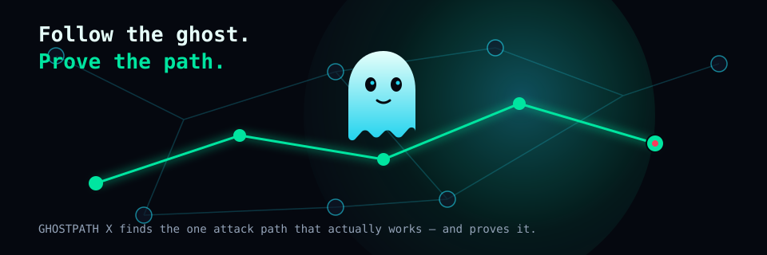
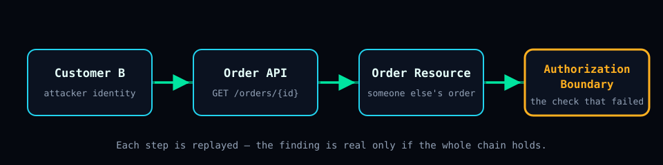
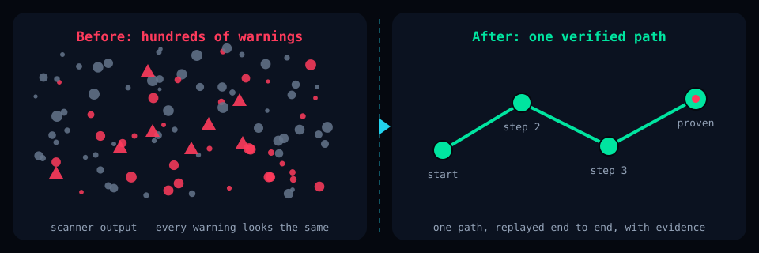
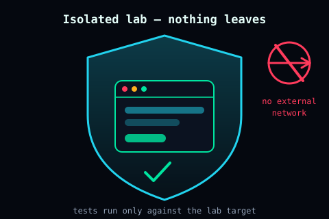
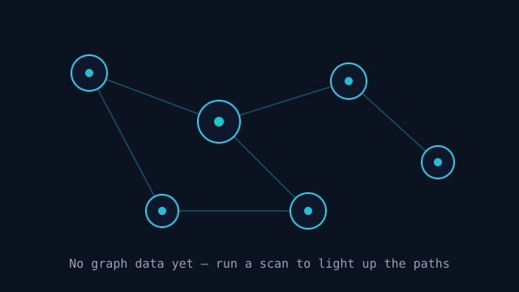

What it is, what real-life problem it solves, and how to try it yourself.

GHOSTPATH X — by Adarsh
Follow the ghost. Prove the path.
An AI-powered security testing tool that finds attack paths in a web app and proves each one really works — safely, inside an isolated lab.
What is this?
GHOSTPATH X is an autonomous security tester for web apps. Think of it as a ghost that walks through an app, finds the ways in, and proves which ones actually work. It does five things:

Discover
It explores a web app like a curious visitor, mapping pages, APIs, users and roles.
Connect
It draws an attack graph linking users → endpoints → resources → permissions.
Reason
It ranks the most likely attack paths, e.g. one user reading another user's order.
Prove
It runs a safe, bounded test and only reports a finding when the test actually fails, with evidence.
Report
It writes the full writeup in Word/PDF with reproduction steps and the fix.
What real-life problem does it solve?
Security testing has three everyday problems. GHOSTPATH X answers all three.
1. Too much noise
Before: normal scanners shout about hundreds of single issues, and nobody knows which ones actually matter or combine into a real break-in.
After: GHOSTPATH X connects findings into verified attack paths, so you see the one chain that actually leads somewhere — not a pile of warnings.
2. AI tools guess
Before: AI tools guess — they claim an exploit works without proof, so teams waste time on false alarms.
After: GHOSTPATH X proves every link with a deterministic test before reporting. If the test does not fail, there is no finding.
3. Testing live sites is dangerous
Before: testing a live website is dangerous and often illegal without permission.
After: GHOSTPATH X only ever runs inside an isolated lab you own. Nothing touches a real site or real user data.

A real lab example
Customer B reads Customer A's order → that is not just a warning, it is a proven path: Customer B → Order API → Order Resource → Authorization Boundary — tested twice, evidence saved.
How it works
LabStart with an isolated lab you own — a test copy of the app.
DiscoverExplore the app and map its pages, APIs and users.
MapDraw the attack graph: who can reach what.
ReasonRank the most likely attack paths.
ValidateRun a safe, bounded test on each path to prove it.
ReportWrite the writeup with evidence, steps and the fix.
The 7 agents
Seven small agents do the work, one job each. The AI only reasons and suggests — plain Python runs the tests.
Discoveryexplores the app
Identitymaps users and roles
Workflowmodels user journeys
Graph Intelligenceconnects everything into a graph
Attack Reasoningranks attack paths
Validationruns the proof tests
Evidencewrites the report
Is it safe?

Isolated lab only. Scans only ever run against a lab you own, in a closed environment.
Lab Policy Engine. Allowed hosts only, 60 requests per minute, no external network, no shell.
AI only reasons, Python only runs approved tests. The AI suggests paths; deterministic Python code runs the actual tests — nothing else is executed.
No real data. Synthetic lab accounts only — no real users, no real orders, no real secrets.
Who built it?
A
Adarsh Security Researcher
Built for learning and for showing secure coding — an autonomous pentester that proves its own claims, inside a lab it cannot escape.
Try it yourself
pip install -r requirements.txt
python run.py
Open http://127.0.0.1:8000
Then run a scan on Overview, solve a challenge on the Challenges page, and open CTF Machines to practise on free VMs.
Owner
Details of the official owner of GHOSTPATH X — locked behind a PIN.
🔒
Owner — locked
Enter the 6-digit owner PIN to see the owner details.
Owner details
A
Adarsh Official owner and creator of GHOSTPATH X
Security researcher
Shown only after unlocking. The session token expires after 30 minutes.
Labs
Isolated test environments. Scans only ever run against labs listed here.
Registered labs
Loading labs…
New Lab
Live Scans
Current scan progress and control. Scans run synchronously and return when complete.
Attack surface as a graph: identities, endpoints, resources, findings and the relationships between them.

No graph data yet — run a scan to light up the paths.
Node details
Click a node in the graph to inspect it. Drag nodes to rearrange, scroll to zoom.
Findings
Validated and candidate findings from the current scan. Select a row to see reproduction steps, evidence and remediation.
0 findings
ID
Title
Severity
Status
Category
Summary
Loading findings…
Challenges
Solve it, learn from it. Each challenge is a hands-on attack path from the lab — download the brief, use the hints, solve it, then generate the writeup.
Available challenges
Loading challenges…
CTF Machines
Free and freemium machines and labs to practise on — download a VM, join an online lab, or play a wargame. Pick a source, filter, solve, and mark it done.
Only attack systems you own or have explicit permission to test. Run downloaded VMs on Host-Only networking, never bridged to your home LAN. VulnHub itself warns it cannot check every machine.
Sources
Click a source card to filter the list below
Loading sources…
0 machines
— machines solved
Loading machines…
Evidence & Reports
Reproducible evidence for every finding, plus the full scan report.